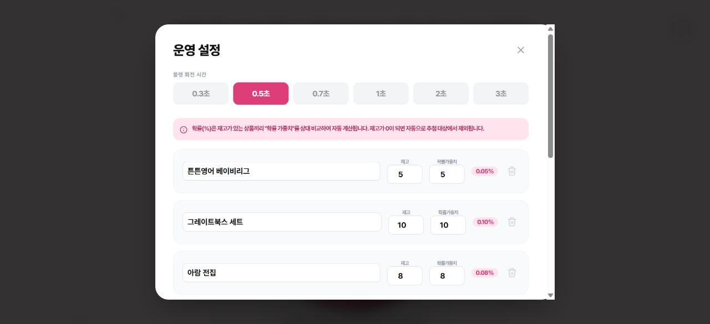
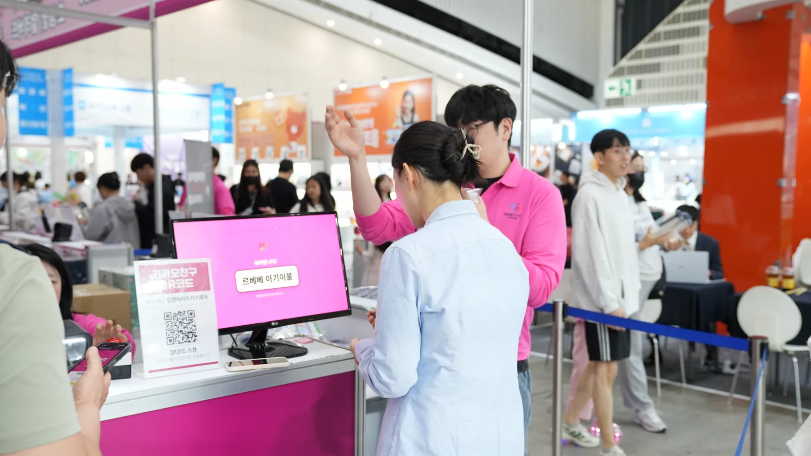
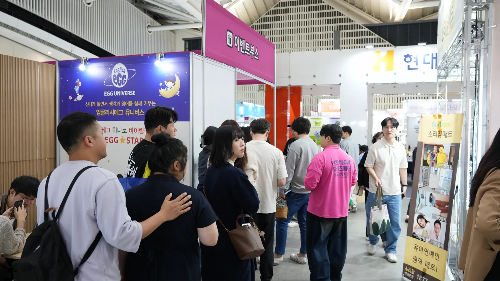
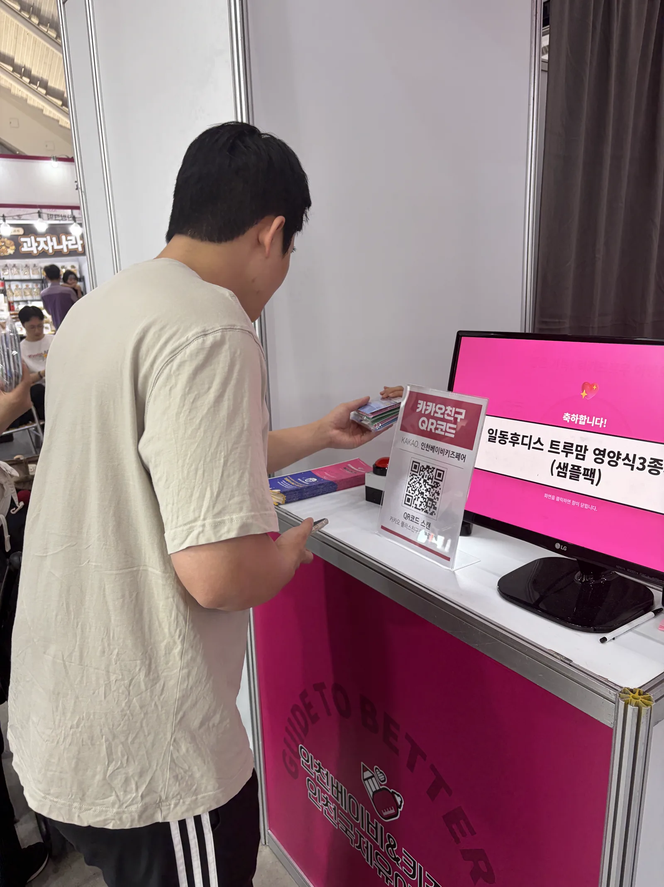
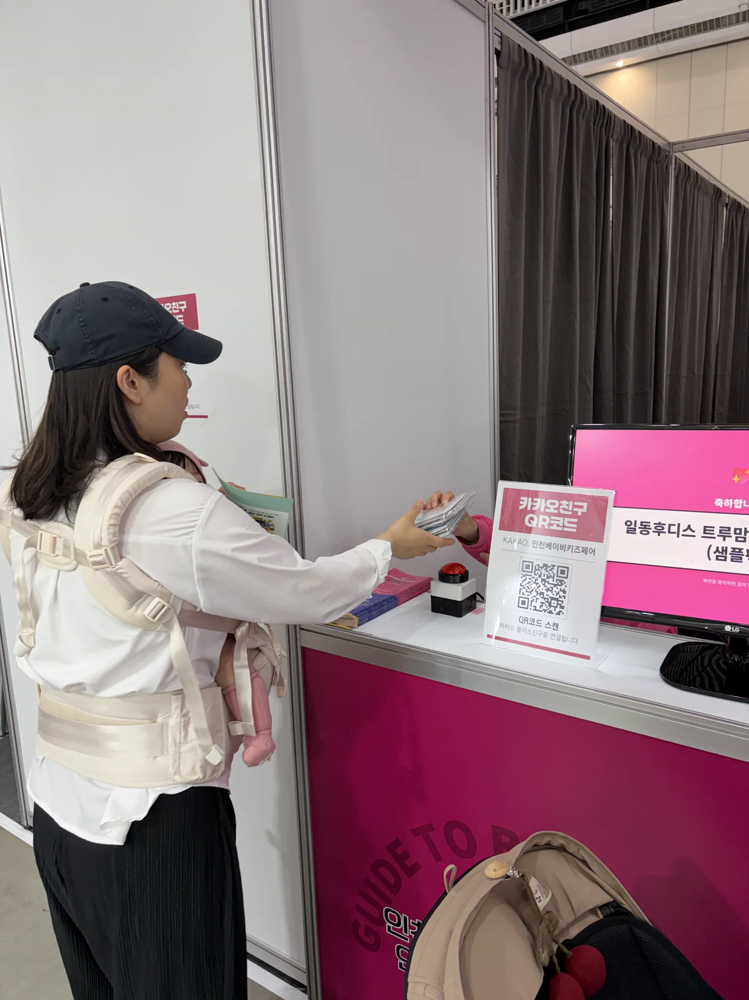
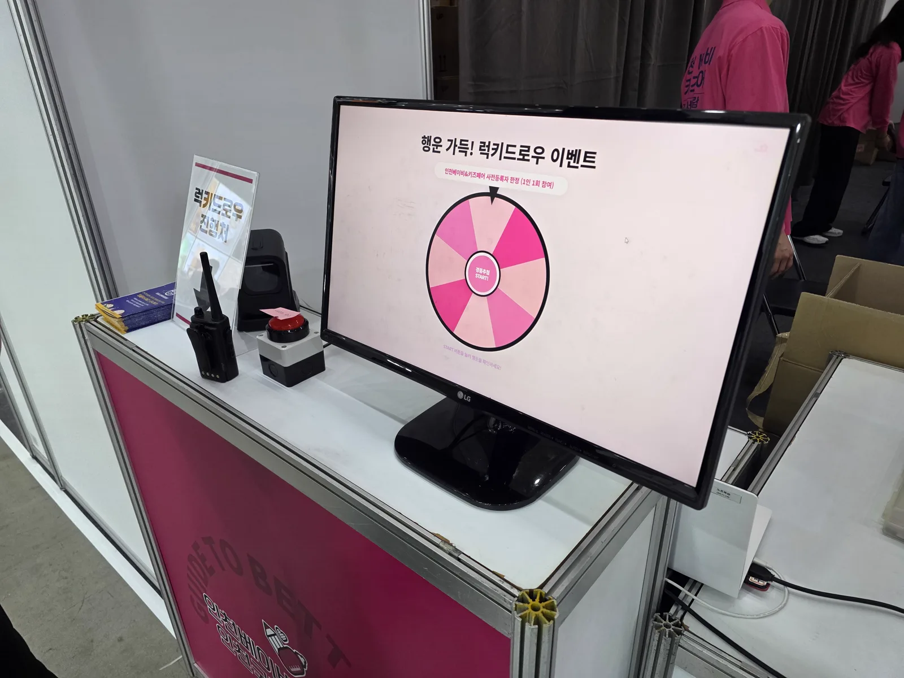

PORTFOLIO 01 · DX / AIX / PRODUCT
스마트 럭키드로우
행사 추첨을 더 빠르고 쉽게 운영하기 위해 만든 디지털 서비스입니다.
문제
아날로그 수동 추첨이 번거로웠습니다.
지류 추첨지 사용 시 결과 확인에 시간이 걸리고, 운영 인력도 많이 필요했습니다.
해결
디지털 추첨 시스템으로 바꿨습니다.
참가자는 종이를 고를 필요 없이 버튼을 클릭해서 바로 추첨하고, 운영자는 관리자 화면에서 경품과 재고를 관리합니다.
서비스 동작
참가자가 버튼을 누르면 바로 추첨됩니다.
여기서 바로 눌러볼 수 있는 실제 배포된 럭키드로우 서비스입니다. 새 창에서 열기 ↗
성과
감소관람객 대기시간
2→1운영 인력
130%참여율 향상
실시간당첨 결과 확인
관리자 운영 화면
관리자 운영 화면

실제 배포 서비스에서 관리자 인증 후 확인한 운영 설정 화면입니다.
관리 메뉴
- 경품 추가·삭제·수정
- 재고 수량 관리
- 확률 가중치 설정
- 재고 소진 상품 자동 제외
- 추첨 시간 설정
기대 효과
- 운영이 간단해집니다.
- 결과를 바로 확인합니다.
- 추첨의 신뢰도가 높아집니다.
- 다음 행사에도 다시 사용할 수 있습니다.
- 참관객 대기 시간이 감소됩니다.
현장 영상
실제 부스에서 이렇게 운영됐습니다.
현장 부스 대기열 및 운영 전경.
현장 럭키드로우 진행처 모니터 화면.
현장 운영 사진
실제 전시장에서는 이렇게 운영했습니다.





담당 업무
기획·개발·배포를 End-to-End 수행했습니다.
문제 정의 · UX 흐름 설계 · AI/바이브 코딩 개발 · 배포 · 현장 적용